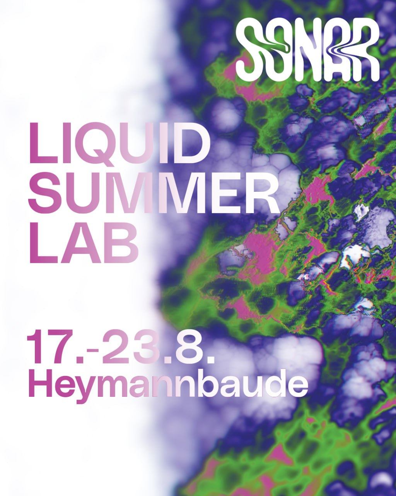

News

Sound Installation at Galerie Solitaire Berlin

Research stay at Concordia University Montreal with Prof. Florian Grond on the use of spaced spatial arrays in the context of field recordings.

2nd place @ the S3DAPC Student 3D Audio Production Competition with Concerts at the Musikprotokolle Graz & Tonmeistertagung Düsseldorf

hymoiarbolo @ DEGEM Spatial Currents Concert Bremen

Liquid Summer Lab at Heymannbaude
More Infos here.
Spatial Spheres 3D-Audio Lab @ Darmstädter Ferienkurse